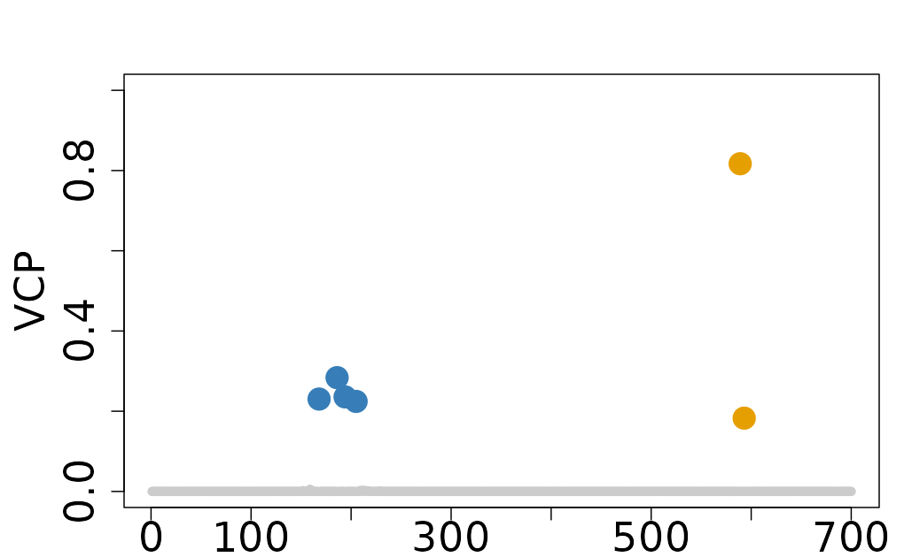
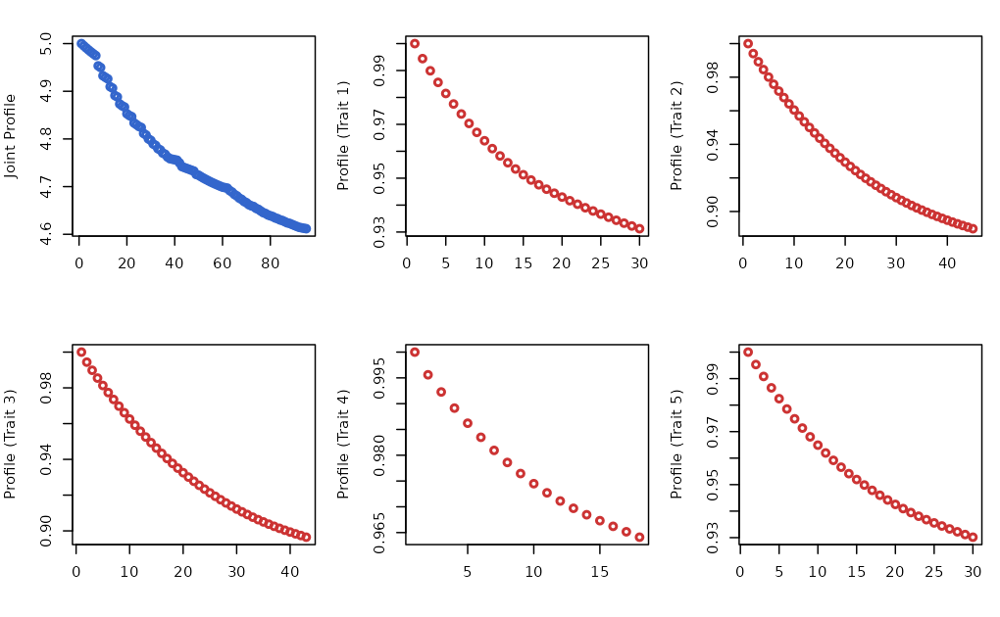
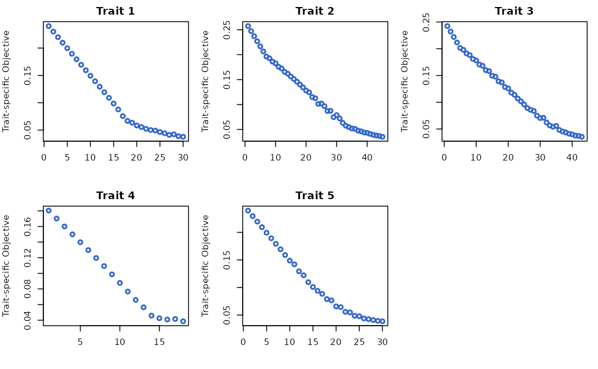
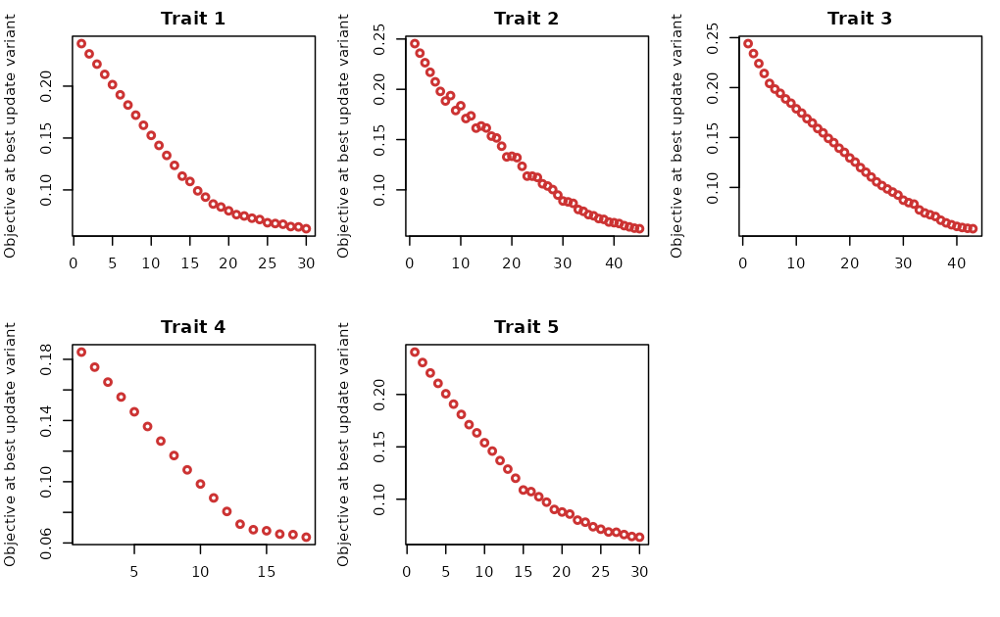

Interpret ColocBoost Output
Source:vignettes/Interpret_ColocBoost_Output.Rmd
Interpret_ColocBoost_Output.RmdThis vignette demonstrates how to interpret the output of ColocBoost, specifically to get the summary of colocalization and focusing only on strong colocalization events.
1. Summarize ColocBoost results
Causal variant structure
The dataset features two causal variants with indices 194 and 589.
- Causal variant 194 is associated with traits 1, 2, 3, and 4.
- Causal variant 589 is associated with traits 2, 3, and 5.
# Loading the Dataset
data(Ind_5traits)
# Run colocboost
res <- colocboost(X = Ind_5traits$X, Y = Ind_5traits$Y)
#> Validating input data.
#> Starting gradient boosting algorithm.
#> Gradient boosting for outcome 4 converged after 40 iterations!
#> Gradient boosting for outcome 5 converged after 59 iterations!
#> Gradient boosting for outcome 1 converged after 61 iterations!
#> Gradient boosting for outcome 3 converged after 91 iterations!
#> Gradient boosting for outcome 2 converged after 94 iterations!
#> Performing inference on colocalization events.
#> Extracting colocalization results with pvalue_cutoff = 0.001, cos_npc_cutoff = 0.2, and npc_outcome_cutoff = 0.2.
#> Keep only CoS with cos_npc >= 0.2. For each CoS, keep the outcomes configurations that pvalue of variants for the outcome < 0.001 and npc_outcome >0.2.
cos_summary <- res$cos_summary
names(cos_summary)
#> [1] "focal_outcome" "colocalized_outcomes"
#> [3] "cos_id" "purity"
#> [5] "top_variable" "top_variable_vcp"
#> [7] "cos_npc" "min_npc_outcome"
#> [9] "n_variables" "colocalized_index"
#> [11] "colocalized_variables" "colocalized_variables_vcp"The cos_summary object contains the colocalization
summary for all colocalization events, with each row representing a
single colocalization event. The summary includes the following
columns:
-
focal_outcome: The focal outcome being analyzed, or
FALSEif no focal outcome exists. - colocalized_outcomes: Traits that are colocalized within the 95% colocalization confidence set (CoS).
- cos_id: A unique identifier for each 95% colocalization confidence set (CoS).
- purity: The minimum absolute correlation of variants within the 95% colocalization confidence set (CoS).
- top_variable: The variable with the highest variant colocalization probability (VCP).
- top_variable_vcp: The variant colocalization probability for the top variable.
- cos_npc: The normalized probability of colocalization for the 95% confidence set, providing empirical evidence in favor of colocalization over a trait-specific configuration.
- min_npc_outcome: The minimum normalized probability among colocalized traits.
- n_variables: The number of variables in the 95% colocalization confidence set (CoS).
- colocalized_index: The indices of colocalized variables.
- colocalized_variables: A list of colocalized variables.
- colocalized_variables_vcp: The variant colocalization probabilities for all colocalized variables.
To obtain the summary of colocalization with a specific focus on
traits of interest, you can use the get_cos_summary, see
the detailed usage of this function in link.
This function allows you to filter the colocalization summary based on a
particular outcome of interest, making it easier to interpret the
results for specific traits. For example, if you are interested in the
colocalization events involving the traits Y1 and
Y2, you can use the following code:
# Get summary table of colocalization
cos_interest_outcome <- get_cos_summary(res, interest_outcome = c("Y1", "Y2"))2. Filter colocalization events by relative strength of evidence
In cos_summary, for each 95% CoS, the
cos_npc column provides a normalized probability of
colocalization and min_npc_outcome column provides the
minimum normalized probability among colocalized traits. Those two
metrics are measured as an empirical evidence of colocalization both in
CoS-level and in trait-level. To obtain the best minimal colocalization
configuration can be defined by using both cos_npc and
npc_outcome. See the detailed usage of this function in link.
filter_res <- get_robust_colocalization(res, cos_npc_cutoff = 0.5, npc_outcome_cutoff = 0.2)
#> Extracting colocalization results with cos_npc_cutoff = 0.5 and npc_outcome_cutoff = 0.2.
#> Keep only CoS with cos_npc >= 0.5. For each CoS, keep the outcomes configurations that the npc_outcome >= 0.2.- The output from
get_robust_colocalizationis the same as output fromcolocboost, which can be directly used in any post inference and visualization. -
npc=0.5ornpc_outcome = 0.2maintains robust colocalization signals for cases when many traits are evaluated. Higher thresholds can be specified if users want to focus only on strong colocalization events.
3. More details on ColocBoost output
The entire colocalization output from colocboost is
stored in the colocboost object, which contains several
components:
-
cos_summary: A summary table for colocalization events (see details in above Section 1). -
vcp: The variable colocalized probability for each variable. -
cos_details: A object with all information for colocalization results. -
data_info: A object with the detailed information from input data. -
model_info: A object with the detailed information for colocboost model.
In this section, we will provide a detailed explanation of the components for deepening into ColocBoost result using a mixed dataset.
# Load example data
data(Ind_5traits)
data(Sumstat_5traits)
# Create a mixed dataset
X <- Ind_5traits$X[1:4]
Y <- Ind_5traits$Y[1:4]
sumstat <- Sumstat_5traits$sumstat[5]
LD <- get_cormat(Ind_5traits$X[[1]])
# Run colocboost
res <- colocboost(X = X, Y = Y, sumstat = sumstat, LD = LD)
#> Validating input data.
#> Starting gradient boosting algorithm.
#> Gradient boosting for outcome 4 converged after 40 iterations!
#> Gradient boosting for outcome 5 converged after 59 iterations!
#> Gradient boosting for outcome 1 converged after 61 iterations!
#> Gradient boosting for outcome 3 converged after 91 iterations!
#> Gradient boosting for outcome 2 converged after 94 iterations!
#> Performing inference on colocalization events.
#> Extracting colocalization results with pvalue_cutoff = 0.001, cos_npc_cutoff = 0.2, and npc_outcome_cutoff = 0.2.
#> Keep only CoS with cos_npc >= 0.2. For each CoS, keep the outcomes configurations that pvalue of variants for the outcome < 0.001 and npc_outcome >0.2.3.1. Variant colocalization probability
(vcp)
-
vcpis the probability of a variant being colocalized with at least one traits, serving as analogs of posterior inclusion probabilities (PIPs) in single-trait fine-mapping. To plot the VCP for the variants within at least one CoS, you can use thecolocboost_plotfunction with theyargument set to"vcp".
colocboost_plot(res, y = "vcp")
Please visit our documentation portal at Visualization
of ColocBoost Results for more details on the
colocboost_plot function
3.2. Analyzed data information
(data_info)
-
n_variables: number of variants being included. -
variables: vector of variant names across all traits being included in colocalization analysis. -
coef: regression coefficients estimated from the colocboost model for each trait. -
z: z-scores from marginal associations for each trait. -
n_outcomes: the number of traits being included in colocalization analysis. -
outcome_infocontains information of analyzed data, including sample size and data type.
res$data_info$outcome_info
#> outcome_names sample_size is_sumstats is_focal
#> y1 Y1 1153 FALSE FALSE
#> y2 Y2 1153 FALSE FALSE
#> y3 Y3 1153 FALSE FALSE
#> y4 Y4 1153 FALSE FALSE
#> y5 Y5 1153 TRUE FALSE3.3. Colocalization details
(cos_details)
cos_details provides a detailed
information for colocalization events identified by
colocboost. This section will provide a detailed
explanation of the components in cos_details.
names(res$cos_details)
#> [1] "cos" "cos_outcomes" "cos_vcp"
#> [4] "cos_outcomes_npc" "cos_npc" "cos_min_npc_outcome"
#> [7] "cos_purity" "cos_top_variables" "cos_weights"3.3.1. Colocalized variants for each CoS
(cos)
-
cos: A list with a detailed information of colocalized variants for each CoS.-
cos_index: Indices of colocalized variables with unique identifier for each CoS. -
cos_variables: Names of colocalized variables with unique identifier for each CoS.
-
- Note that variants are ordered by their VCP in descending order.
res$cos_details$cos
#> $cos_index
#> $cos_index$`cos1:y1_y2_y3_y4`
#> [1] 186 194 168 205
#>
#> $cos_index$`cos2:y2_y3_y5`
#> [1] 589 593
#>
#>
#> $cos_variables
#> $cos_variables$`cos1:y1_y2_y3_y4`
#> [1] "rs_186" "rs_194" "rs_168" "rs_205"
#>
#> $cos_variables$`cos2:y2_y3_y5`
#> [1] "rs_589" "rs_593"3.3.2. Colocalized traits for each 95% CoS
(cos_outcomes)
-
cos_outcomes: A list with a detailed information of colocalized traits for each CoS.-
outcome_index: Indices of colocalized traits with unique identifier for each CoS. -
outcome_name: Names of colocalized traits with unique identifier for each CoS.
-
res$cos_details$cos_outcomes
#> $outcome_index
#> $outcome_index$`cos1:y1_y2_y3_y4`
#> [1] 1 2 3 4
#>
#> $outcome_index$`cos2:y2_y3_y5`
#> [1] 2 3 5
#>
#>
#> $outcome_name
#> $outcome_name$`cos1:y1_y2_y3_y4`
#> [1] "Y1" "Y2" "Y3" "Y4"
#>
#> $outcome_name$`cos2:y2_y3_y5`
#> [1] "Y2" "Y3" "Y5"-
cos_npc: normalized probability of colocalization for CoS, providing empirical evidence in favor of colocalization over a trait-specific configuration. -
cos_outcomes_npc: normalized probability for each colocalized trait in order with evidence strength. - These two metrics could be used to filter the colocalization events by relative strength of evidence, see details in Section 2.
res$cos_details$cos_npc
#> cos1:y1_y2_y3_y4 cos2:y2_y3_y5
#> 0.9989418 0.9974159
res$cos_details$cos_outcomes_npc
#> $`cos1:y1_y2_y3_y4`
#> outcomes_index relative_logLR npc_outcome
#> Y3 3 2.2563485 0.9890312
#> Y1 1 1.8287003 0.9742005
#> Y4 4 0.9499365 0.8504124
#> Y2 2 0.6414479 0.7227667
#>
#> $`cos2:y2_y3_y5`
#> outcomes_index relative_logLR npc_outcome
#> Y5 5 1.994252 0.9814726
#> Y3 3 1.494458 0.9496581
#> Y2 2 1.475390 0.9477011-
cos_purity: includes three lists, for each list, it contains matrix, where is the number of CoS.-
min_abs_cor: the minimum absolute correlation of variants within (diagonal) CoS or in-between (off-diagonal) different CoS. -
median_abs_cor: the median absolute correlation of variants within (diagonal) CoS or in-between (off-diagonal) different CoS. -
max_abs_cor: the maximum absolute correlation of variants within (diagonal) CoS or in-between (off-diagonal) different CoS.
-
res$cos_details$cos_purity
#> $min_abs_cor
#> cos1:y1_y2_y3_y4 cos2:y2_y3_y5
#> cos1:y1_y2_y3_y4 9.941612e-01 4.086608e-05
#> cos2:y2_y3_y5 4.086608e-05 9.761542e-01
#>
#> $max_abs_cor
#> cos1:y1_y2_y3_y4 cos2:y2_y3_y5
#> cos1:y1_y2_y3_y4 0.996765520 0.002824775
#> cos2:y2_y3_y5 0.002824775 0.976154165
#>
#> $median_abs_cor
#> cos1:y1_y2_y3_y4 cos2:y2_y3_y5
#> cos1:y1_y2_y3_y4 0.9970944352 0.0004030735
#> cos2:y2_y3_y5 0.0004030735 0.9761541652-
cos_top_variables: indices and names of the top variant for each CoS, which is the variant with the highest VCP. - Note that there may exist multiple variants in perfect LD with the same highest VCP.
res$cos_details$cos_top_variables
#> top_index top_variables
#> cos1:y1_y2_y3_y4 186 rs_186
#> cos2:y2_y3_y5 589 rs_589-
cos_weights: the integrative weights for each colocalized trait in the CoS. This is used to recalibrate CoS when some traits are filtered out.. -
cos_vcp: the single-effect VCP for each CoS.
3.4. Model information
(model_info)
-
model_coveraged: if the model is converged. -
outcome_model_coveraged: if the trait-specific model is converged. -
n_updates: number of boosting rounds -
outcome_n_updates: number of boosting rounds for each trait. -
jk_update: indices of the variants being updated in the model at each boosting round.
# Pick arbitrary SEC updates, see entire update in advance
res$model_info$jk_star[c(5:10,36:38), ]
#> Y1 Y2 Y3 Y4 Y5
#> jk_star_5 NA NA NA NA 593
#> jk_star_6 NA NA NA NA 593
#> jk_star_7 186 186 186 186 NA
#> jk_star_8 NA NA NA NA 593
#> jk_star_9 186 186 186 186 NA
#> jk_star_10 NA NA NA NA 593
#> jk_star_36 186 NA 186 186 NA
#> jk_star_37 NA NA 589 340 NA
#> jk_star_38 NA NA NA 436 NA-
profile_loglik: joint profile log-likelihood changes over boosting rounds. -
outcome_profile_loglik: trait-specific profile log-likelihood changes over boosting rounds.
# Plotting joint profile log-likelihood (blue) and trait-specific profile log-likelihood (red).
par(mfrow=c(2,3),mar=c(4,4,2,1))
plot(res$model_info$profile_loglik, type="p", col="#3366CC", lwd=2, xlab="", ylab="Joint Profile")
for(i in 1:5){
plot(res$model_info$outcome_profile_loglik[[i]], type="p", col="#CC3333", lwd=2, xlab="", ylab=paste0("Profile (Trait ", i, ")"))
}
-
outcome_proximity_obj: trait-specific proximity smoothed objective for each trait. -
outcome_coupled_best_update_obj: objective at the (coupled) best update variant for each outcome.
# Save to restore default options
oldpar <- par(no.readonly = TRUE)
# Plotting trait-specific proximity objective
par(mfrow=c(2,3), mar=c(4,4,2,1))
for(i in 1:5){
plot(res$model_info$outcome_proximity_obj[[i]], type="p", col="#3366CC", lwd=2, xlab="", ylab="Trait-specific Objective", main = paste0("Trait ", i))
}
par(oldpar)
# Save to restore default options
oldpar <- par(no.readonly = TRUE)
# Plotting trait-specific objective at the best update variant
par(mfrow=c(2,3), mar=c(4,4,2,1))
for(i in 1:5){
plot(res$model_info$outcome_coupled_best_update_obj[[i]], type="p", col="#CC3333", lwd=2, xlab="", ylab=paste0("Objective at best update variant"), main = paste0("Trait ", i))
}
par(oldpar)
3.5. Trait-specific effects information
(ucos_details)
There is ucos_details in ColocBoost output when setting
output_level = 2, including the trait-specific
(uncolocalized) information from the single-effect learner (SEL).
# Create a mixed dataset
data(Ind_5traits)
data(Heterogeneous_Effect)
X <- Ind_5traits$X[1:3]
Y <- Ind_5traits$Y[1:3]
X1 <- Heterogeneous_Effect$X
Y1 <- Heterogeneous_Effect$Y[,1,drop=F]
res <- colocboost(X = c(X, list(X1)), Y = c(Y, list(Y1)), output_level = 2)
#> Validating input data.
#> Starting gradient boosting algorithm.
#> Gradient boosting for outcome 1 converged after 86 iterations!
#> Gradient boosting for outcome 3 converged after 99 iterations!
#> Gradient boosting for outcome 4 converged after 103 iterations!
#> Gradient boosting for outcome 2 converged after 113 iterations!
#> Performing inference on colocalization events.
#> Extracting colocalization results with pvalue_cutoff = 0.001, cos_npc_cutoff = 0.2, and npc_outcome_cutoff = 0.2.
#> Keep only CoS with cos_npc >= 0.2. For each CoS, keep the outcomes configurations that pvalue of variants for the outcome < 0.001 and npc_outcome >0.2.
#> Extracting outcome-specific (uncolocalized) results with pvalue_cutoff = 1e-05, and npc_outcome_cutoff = 0.2.
#> For each uCoS, keep the outcome-specific (uncolocalized) events that pvalue of variants for the outcome < 1e-05 and npc_outcome >0.2.
names(res$ucos_details)
#> [1] "ucos" "ucos_outcomes" "ucos_weight"
#> [4] "ucos_top_variables" "ucos_purity" "cos_ucos_purity"
#> [7] "ucos_outcomes_npc"3.5.1. Trait-specific (uncolocalized) confidence sets
(ucos)
-
ucos: A list containing a detailed information about trait-specific (uncolocalized) variants for each uCoS.-
ucos_index: Indices of trait-specific (uncolocalized) variants. -
ucos_variables: Names of trait-specific (uncolocalized) variants.
-
res$ucos_details$ucos
#> $ucos_index
#> $ucos_index$`ucos1:y4`
#> [1] 322
#>
#> $ucos_index$`ucos2:y4`
#> [1] 982 993 983 981 970 988 942 972 1000 987 1005 971 973 990 991
#> [16] 958 976 977 975 906 938
#>
#>
#> $ucos_variables
#> $ucos_variables$`ucos1:y4`
#> [1] "rs_322"
#>
#> $ucos_variables$`ucos2:y4`
#> [1] "rs_982" "rs_993" "rs_983" "rs_981" "rs_970" "rs_988" "rs_942"
#> [8] "rs_972" "rs_1000" "rs_987" "rs_1005" "rs_971" "rs_973" "rs_990"
#> [15] "rs_991" "rs_958" "rs_976" "rs_977" "rs_975" "rs_906" "rs_938"3.5.2. Trait-specific (uncolocalized) outcomes
(ucos_outcomes)
-
ucos_outcomes: A list with a detailed information about trait-specific (uncolocalized) outcomes for each uCoS.-
outcome_index: Indices of trait-specific (uncolocalized) outcomes. -
outcome_name: Names of trait-specific (uncolocalized) outcomes.
-
res$ucos_details$ucos_outcomes
#> $outcome_index
#> $outcome_index$`ucos1:y4`
#> [1] 4
#>
#> $outcome_index$`ucos2:y4`
#> [1] 4
#>
#>
#> $outcome_name
#> $outcome_name$`ucos1:y4`
#> [1] "Y4"
#>
#> $outcome_name$`ucos2:y4`
#> [1] "Y4"3.5.3. Purity across CoS and uCoS
(cos_ucos_purity)
-
cos_ucos_purity: Includes three lists, each containing an matrix, where is the number of CoS and is the number of uCoS:-
min_abs_cor: Minimum absolute correlation of variables across each pair of CoS and uCoS. -
median_abs_cor: Median absolute correlation of variables across each pair of CoS and uCoS. -
max_abs_cor: Maximum absolute correlation of variables across each pair of CoS and uCoS.
-
res$ucos_details$cos_ucos_purity
#> $min_abs_cor
#> ucos1:y4 ucos2:y4
#> cos1:y1_y2_y3 0.1132965 0.05866258
#> cos2:y2_y3:merged 0.1675803 0.03404661
#>
#> $max_abs_cor
#> ucos1:y4 ucos2:y4
#> cos1:y1_y2_y3 0.4111256 0.4507412
#> cos2:y2_y3:merged 0.5222858 0.5905318
#>
#> $median_abs_cor
#> ucos1:y4 ucos2:y4
#> cos1:y1_y2_y3 0.3633263 0.2969155
#> cos2:y2_y3:merged 0.3449331 0.31341463.5.4. Other components
-
ucos_weight: Integrative weights for each trait-specific (uncolocalized) trait, used to recalibrate uCoS when traits are filtered out. -
ucos_top_variables: Indices and names of the top variable for each uCoS, which is the variable with the highest VCP. -
ucos_purity: Includes three lists, each containing an matrix, where is the number of uCoS:-
min_abs_cor: Minimum absolute correlation of variables within (diagonal) uCoS or between (off-diagonal) different uCoS. -
median_abs_cor: Median absolute correlation of variables within or between uCoS. -
max_abs_cor: Maximum absolute correlation of variables within or between uCoS.
-
By analyzing these components, you can gain a deeper understanding of trait-specific (uncolocalized) effects that are not colocalized, providing additional insights into the data.
3.6. Diagnostic details
(diagnostic_details)
There is diagnostic_details in ColocBoost output when
setting output_level = 3:
# Loading the dataset
data(Ind_5traits)
X <- Ind_5traits$X
Y <- Ind_5traits$Y
res <- colocboost(X = X, Y = Y, output_level = 3)
#> Validating input data.
#> Starting gradient boosting algorithm.
#> Gradient boosting for outcome 4 converged after 40 iterations!
#> Gradient boosting for outcome 5 converged after 59 iterations!
#> Gradient boosting for outcome 1 converged after 61 iterations!
#> Gradient boosting for outcome 3 converged after 91 iterations!
#> Gradient boosting for outcome 2 converged after 94 iterations!
#> Performing inference on colocalization events.
#> Extracting colocalization results with pvalue_cutoff = 0.001, cos_npc_cutoff = 0.2, and npc_outcome_cutoff = 0.2.
#> Keep only CoS with cos_npc >= 0.2. For each CoS, keep the outcomes configurations that pvalue of variants for the outcome < 0.001 and npc_outcome >0.2.
#> No uncolocalized results in this region!-
cb_model: trait-specific proximity gradient boosting model, including proximity weight at each iteration, residual after gradient boosting, etc. -
weights_paths: individual trait-specific weights for each iteration.
names(res$diagnostic_details$cb_model)
#> [1] "ind_outcome_1" "ind_outcome_2" "ind_outcome_3" "ind_outcome_4"
#> [5] "ind_outcome_5"
names(res$diagnostic_details$cb_model$ind_outcome_1)
#> [1] "res" "beta"
#> [3] "weights_path" "profile_loglike_each"
#> [5] "obj_path" "obj_single"
#> [7] "change_loglike" "correlation"
#> [9] "z" "learning_rate_init"
#> [11] "stop_thresh" "ld_jk"
#> [13] "jk" "scaling_factor"
#> [15] "beta_scaling" "XtX_beta_cache"
#> [17] "z_univariate" "beta_hat_univariate"
#> [19] "multi_correction" "multi_correction_univariate"
#> [21] "stop_null" "check_null_max"
#> [23] "check_null_max_ucos" "beta_hat"-
cb_model_para: parameters used in fitting ColocBoost model.
names(res$diagnostic_details$cb_model_para)
#> [1] "L" "P" "N"
#> [4] "tau" "func_simplex" "lambda"
#> [7] "lambda_focal_outcome" "learning_rate_decay" "profile_loglike"
#> [10] "dynamic_learning_rate" "prioritize_jkstar" "jk_equiv_corr"
#> [13] "jk_equiv_loglik" "func_compare" "coloc_thresh"
#> [16] "update_status" "jk" "LD_free"
#> [19] "real_update_jk" "outcome_names" "variables"
#> [22] "focal_outcome_idx" "coveraged" "num_updates"
#> [25] "coveraged_outcome" "num_updates_outcome" "func_multi_test"
#> [28] "multi_test_thresh" "multi_test_max" "model_used"
#> [31] "ld_mismatch" "M" "no_coverage_stop"
#> [34] "use_entropy" "weight_fudge_factor" "coverage"
#> [37] "min_abs_corr" "n_purity"